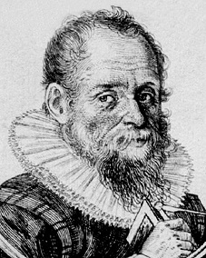
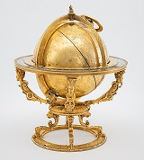

Jost Bürgi
28.2.1552 in Lichtensteig/Toggenburg, Schweiz
- 31.1.1632 in Kassel, Deutschland
Jost Bürgi war ein Genie. Er revolutionierte die Mathematik und die Zeitmessung. Dank seiner handwerklichen Begabung sind die Resultate seiner Forschungen bis heute mehr als Theorien für die Wissenschaft.
Wie kommt man vom abgelegenen Toggenburg an den glamourösen Hof von Rudolf II., Kaiser des Heiligen Römischen Reichs, in Prag? Geografisch über Kassel, wo Jost Bürgi für den Landgrafen Wilhelm IV. arbeitete. Inhaltlich über die Genialität, die beim Uhrmacher im Überfluss vorhanden war. Der Mann aus Lichtensteig war nicht nur technisch begabt, sondern auch ein talentierter Mathematiker und ein visionärer Astronom. Ausserdem war ihm eine ausserordentliche handwerkliche Begabung in die Wiege gelegt worden. Diese Mischung machte den Toggenburger zu einem der gefragtesten Männer im Europa des 16. Jahrhunderts.
Jost Bürgi war schon früh von der Wissenschaft fasziniert. Nicht nur beobachtete er die Gestirne, er beschäftigte sich auch mit mathematischen Fragen und vor allem mit der Zeit. Als einer der ersten Menschen baute Bürgi 1585 eine Uhr mit einem Sekundenzeiger. Bis zu diesem Augenblick war niemandem so ganz klar, wie lange eine Sekunde wirklich dauert. Die besten Uhren der damaligen Zeit hatten täglich eine Abweichung von rund einer Viertelstunde! Bürgis Uhr mit Sekundenzeiger, die er für Wilhelm IV. angefertigt hatte, machte ihn mit einem Schlag berühmt. Der «Sekundenmann aus dem Toggenburg» war in aller Munde und begehrt wie nie zuvor. Dabei war er vom hessischen Landgrafen ursprünglich nur als Verantwortlicher für die Instrumente und astronomischer Gehilfe angestellt worden.
Schweiz. Nationalmuseum 
Begehrt waren auch Bürgis Himmelsgloben. Darin vereinigte der Uhrmacher seine gesamte wissenschaftliche und handwerkliche Genialität: Mathematik, Astronomie und Zeitmessung wurden mit künstlerischen Fertigkeiten in ein Wunderwerk der Technik verschmolzen. Dass Jost Bürgi darin auch noch die mit der Einführung des gregorianischen Kalenders 1582 nötigen Schaltjahre berücksichtigte, grenzt fast an ein Wunder. Heute existieren noch fünf von Bürgi geschaffene Himmelsgloben. Das jüngste und komplexeste Exemplar ist in der neuen Dauerausstellung «Sammlung im Westflügel» im Landesmuseum Zürich zu sehen. Beim Betrachten dieses Ausnahmeobjekts wird klar: Der Weg aus dem Toggenburg an den kaiserlichen Hof nach Prag war kein Zufall, sondern nur eine Frage der Zeit!
Artikel von Andrej Abplanalp, Historiker und Kommunikations-Chef des Schweizerischen Nationalmuseums
[https://blog.nationalmuseum.ch/2019/10/buergi-der-geniale-uhrmacher/]
Ergänzung: Sinustafel und Logarithmensystem
Zur Erleichterung der Berechnung seiner Kosmosmodelle und der Umrechnung von Messergebnissen der Himmelsbeobachtungen entwickelte er zunächst eine
Sinustafel und ab 1588 aus den Arbeiten zur Zinseszinsberechnung von Simon Stevin (1548 - 1620) natürliche Logarithmen, die als "Arithmetische und
geometrische Progresstabuln" 1620 in Prag veröffentlicht wurden (unabhängig von Napier und Briggs).
1604 bis 1630 stand er im Dienste Kaiser Rudolfs II. in Prag. Hier traf er auf den
Hofastronomen Johann Kepler, der Bürgi zur Bearbeitung und Veröffentlichung seiner Erkenntnisse anhielt.
1631 kehrte Bürgi nach Kassel zurück.